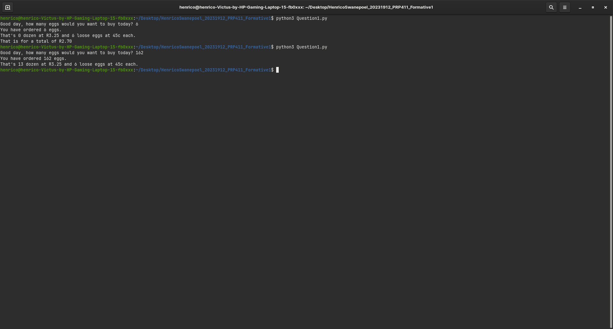
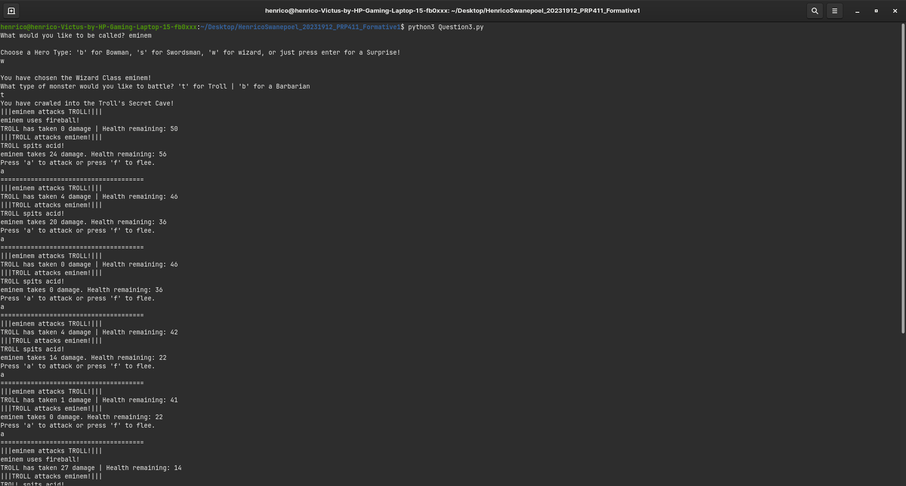
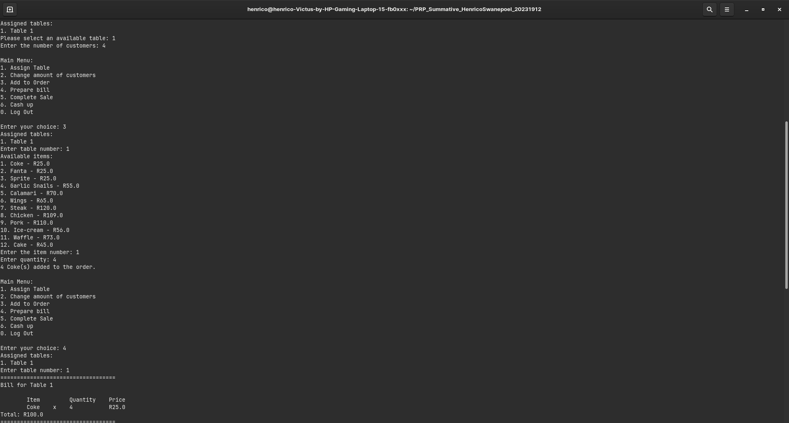

Projects
Python Basics Project

As most things go, you should learn to crawl before you start running. The goal behind this project was to understand
some of the basics in Python.
Python CLI game with a class and luck system

This was somewhat of a courages project. I threw myself into the deep end to get a better grasp on using classes in Python.
It turned out to be one of the projects I went back to the most, it's a simple game, but the battles can become quite intense,
seeing that all the options are luck dependant.
Python POS application

Ever heard the saying "Don't reinvent the wheel"? Well this project was wholely focused on reinventing one of the most important
softwares ever made for our day-to-day lives. With about 1 or 2 weeks of constant debugging, I achieved a somewhat working
Point of Sale software solution for a make believe restaurant. This project reminds me that no matter how sound your code may look,
there will always be a landmine waiting for you to step onto it. Lesson: Debug, debug, debug.